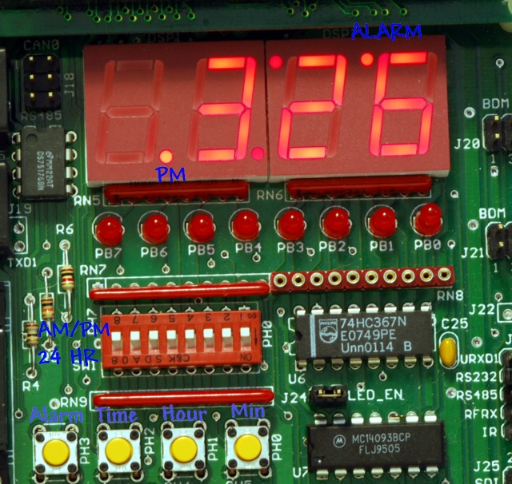
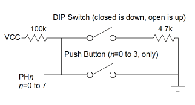
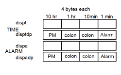
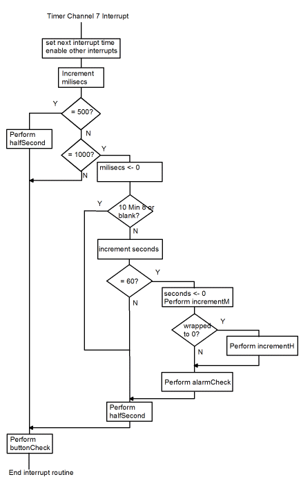
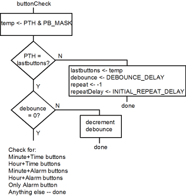
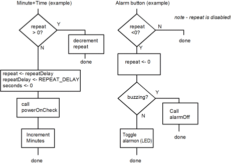

| Previous Appendix | Next Appendix | Index | Search the Text |
The goal of this project is to design an alarm clock using the Dragon12-plus development board. It will also work on the older DRAGON12 with one code change. Unlike the preceding examples, this one will be programmed in the C language. The features of the alarm clock are to be:

The brightness level is set via the potentiometer on the Dragon12-plus board that is connected to ATD channel 7. The ATD is configured to continuously read that channel. The remainder of the clock functionality is implemented in timer channel interrupt service routines. Three timer channels are used:
These interrupts are all time based, and not event driven. It would have been possible to perform all these functions within a single interrupt service routine, necessitating the use of only a single timer channel. It would have also been possible to use even more channels so that the time update and user interface had separate interrupt service routines. The "compromise" in this implementation was done solely for instructional reasons - as an example of how to use multiple interrupt service routines and as an example of how to combine functions into a single interrupt service routine.
The final program can be seen here. The S19 file is available here which can be run on the simulator but is best run on the Dragon12-plus board.
The design will be examined as follows:
The DIP switches and four push buttons are connected in parallel from the pins of port H to ground. The four push buttons connect to the four least significant bits of port H, and in order to use these, the corresponding DIP switches must be in their open (up) position. Pull-up resistors hold the voltage levels high unless a push button is depressed or a DIP switch is in its lower position. This means that the push buttons will appear logically inverted - a low, 0 level, means depressed while a high, 1 level, means released.

A small speaker is driven (via a buffer) from port T pin 5. A potentiometer on the board provides an adjustable voltage, 0 to 5 volts, to port AD pin 7 of the A to D converter.
The LED display connects to ports B and P as described in the section Time Multiplexed Displays and won't be discussed further here.
The C language generates code to initialize all variables, except local variables (called automatic variables) when execution starts in the C runtime startup code that is automatically generated. By default, variables are initialized to zero. It is still necessary to initialize the I/O registers, which will do in the main function, the function that is invoked from the startup code.
First there are macro definitions for various constants. These values are substituted for their names wherever they occur. The first group declares a mask for the four push buttons and then values for each of the four buttons. Because a zero means the button is depressed, these values appear inverted. But it will all be fine when the values get used later in the program.
#define PB_MASK (0x0f) // Mask for the push buttons #define ALARM_SW (PB_MASK & ~8) // Alarm switch #define TIME_SW (PB_MASK & ~4) // Time set switch #define HOUR_SW (PB_MASK & ~2) // Hour switch #define MINUTE_SW (PB_MASK & ~1) // Minute Switch
The AMPM/24hour mode selection switch isn't inverted, so has a simple mask.
#define AMPM_SW (0x80)
A decimal point in the display is the most significant bit. A blank display value for the lookup table segm_ptrn is 0x20. (The value zero would display the numeral "0".)
#define POINT (0x80) #define BLANK (0x20)
Finally, some time constant macros are defined..
#define TB1MS ((unsigned)24000) // 1ms time base of 24,000 instruction cycles // 24,000 x 1/24MHz = 1ms at 24 MHz bus speed #define INITIAL_REPEAT_DELAY (500) // 500ms to initial repeat #define REPEAT_DELAY (250) // 250 ms repeat interval #define DEBOUNCE_DELAY (10) // 10 ms debounce time
Unlike the Time Multiplexed Displays example which had a single 4-byte array to hold the LED display value (prior to conversion to segment values), the alarm clock will use four 4-byte arrays:

The two TIME arrays are for the current time while the two ALARM arrays are for the alarm time. The decimal point value is kept separate from the time value for ease of time calculations. The C declarations will actually declare the two TIME arrays as a single 8-byte array and the two ALARM arrays as a single 8-byte array so that they each can be passed as a single argument to a function. Proper technique would be to define each as a structure containing two arrays, but this approach is simpler for a reader who might be "rusty" with the C language. Two macros are defined for the decimal point arrays, disptdp and dispadp, to be at 4 bytes into dispt and dispa, respectively. The display arrays are initialized for the time to be blank (it will flash between blank and 88:88) and the alarm time of 1:00. In addition, the two decimal points making the colon of the alarm time are turned on. They will always be on - they don't flash.
unsigned char select = 0; // current digit index being displayed
unsigned char dispt[8] = {BLANK, BLANK, BLANK, BLANK}; // Time display digits
#define disptdp ((unsigned char *)&dispt[4]) // decimal points defined in last 4 locations
unsigned char dispa[8] = {0, 1, 0, 0, 0, POINT, POINT, 0}; // Alarm display digits
#define dispadp ((unsigned char *)&dispa[4]) // decimal points defined in last 4 locations
#define HOUR10 (0) // Some convenient aliases
#define HOUR1 (1)
#define MIN10 (2)
#define MIN1 (3)
#define PM (4)
#define flashsec disptdp[1]
#define flashsec2 disptdp[2]
#define alarmon disptdp[3]
#define alarmon2 dispadp[3]
The variables are declared explicitly as unsigned or (where needed) signed and in as small as possible for their potential contents:
unsigned short millisecs; // Millisecond counter (reset every second) unsigned char seconds; // Seconds counter, reset every minute unsigned char debounce; // time for debounce unsigned char lastButtons; // last button values signed short repeat; // repeat time signed short repeatDelay; // Delay of next repeat unsigned char ledFraction; // counter for turning display on and off for brightness control unsigned char buzzing; // The alarm is sounding
Tables are declared using the keyword const. The linker will put the tables in the EPROM memory rather than RAM:
// Segment conversion table:
const unsigned char segm_ptrn[] = {
0x3f,0x06,0x5b,0x4f,0x66,0x6d,0x7d,0x07,
0x7f,0x6f,0x77,0x7c,0x39,0x5e,0x79,0x71,
0x3d,0x76,0x74,0x1e,0x38,0x54,0x63,0x5c,
0x73,0x50,0x78,0x3e,0x1c,0x6e,0x08,0x40,
0x00,0x01,0x48,0x41,0x09,0x49};
// port value to select each LED digit
const unsigned char dspmap[] = {0x0e, 0x0d, 0x0b, 0x07};
When the program is started, the variables and the stack are initialized, interrupts are enabled, and the function main is called. When main returns, there is a routine, an idle process, which executes. This routine is a simple loop-forever structure that executes the WAI instruction repeatedly. After disabling interrupts, the function initializes the PLL for a 24 MHz clock frequency.
int main(void) {
__asm__ __volatile__ (" sei "); /* Disable interrupts */
SYNR = 2; /* This would be 5 for the older DRAGON12 */
while ((CRGFLG & 0x8) == 0);
CLKSEL = 0x80;
Then the three interrupt vectors are initialized. If the vectors were in ROM, a different technique for initialization would be necessary - they would have be defined in a small assembly language file.
UserTimerCh5 = (unsigned int) &timer5;
UserTimerCh6 = (unsigned int) &timer6;
UserTimerCh7 = (unsigned int) &timer7;
Ports B, P, and H are initialized. Since the default port direction is input, initializing port H isn't necessary but is done here just to document the operation.
PTP = 0xff; // Turn off 7 segment display
DDRB = 0xff; // portb = output
DDRP = 0xff; // portp = output
DDRH = 0x00; // porth = input
The timer has channels 5, 6, and 7 initialized as Output Compare Channels with interrupts enabled. The value stored in TCTL1 will be explained in the next section on speaker operation.
TSCR = 0x80; // enable the timer
TIOS = 0xe0; // select t5, t6, t7 as an output compares
TMSK1 = 0xe0; // enable interrupts for t5, t6, t7
TCTL1 = 0x0c; // configure t5 for eventual toggling of PT5
// when alarm sounds
The Analog to Digital converter is initialized to perform continuous 8-bit conversions of channel 7. By doing this, it will not require an interrupt service routine, and the most recent voltage value can be read at any time from ADR00H.
ATD0CTL2 = 0x80; // Enable ATD operation
ATD0CTL3 = 0x08; // single conversion performed
ATD0CTL4 = 0x80; // 8 bit conversion
ATD0CTL5 = 0x27; // Continuously (SCAN=1) read channel 7
Initialization is complete, so interrupts can be re-enabled.
__asm__ __volatile__ (" cli "); /* Enable interrupts */
}
Timer channel 5, which drives the speaker, has this simple interrupt service routine:
void INTERRUPT timer5(void) {
TFLG1 &= 0x20; // clear flag
TC5 += TB1MS*2;
}
An interrupt will occur every two milliseconds. With TCTL1 initialized to 0x0c, OM5 and OL5 are both 1, and the output latch will be set to 1 on each interrupt. Thus the output will not change and there will be no sound. The alarm is turned on by clearing OM5, so that the output will toggle on each interrupt. This will produce an output tone of 250 Hz. The function alarmCheck sees if the alarm is turned on and the alarm time matches the current time. In that case it turns the alarm on. The function is called every minute, and if the alarm condition is not met it turns the alarm off. This means the alarm will sound for at the maximum one minute.
void alarmCheck(void) {
if (alarmon &&
dispa[HOUR10]==dispt[HOUR10] &&
dispa[HOUR1]==dispt[HOUR1] &&
dispa[MIN10] == dispt[MIN10] &&
dispa[MIN1] == dispt[MIN1] &&
((PTH&M_SW) == 0 || dispa[PM] == dispt[PM])) {
TCTL1 &= ~8; // turn on alarm sound
buzzing++;
} else {
alarmOff();
}
}
The user can also turn the alarm off from the user interface. Turning the alarm off requires setting OM5. This is done in the function alarmOff:
void alarmOff(void) {
TCTL1 |= 8; // turn off alarm sound
buzzing = 0;
}
The variable buzzing provides a convenient way to know if the alarm is sounding without testing the timer channel control bit. This makes it easy to change the alarm method without having to change every place in the program that might want to know the alarm status.
The basic operation of the LED display was described in the section Time Multiplexed Displays and won't be discussed further here. However there are a couple differences in operation. First, here is the interrupt service routine:
void INTERRUPT timer6(void) {
TFLG1 &= 0x40; // Next interrupt in 1ms
TC6 += TB1MS;
__asm__ __volatile__ (" cli "); /* Enable interrupts */
select = (select+1) & 3; // Go to next digit
PORTB = 0; // While we change, at least, we want display off
if (ledFraction + ADR00H > 255) { // display
PTP = (PTP & 0xf0) | dspmap[select];
if ((PTH & PB_MASK & ~ALARM_SW) == 0) { // Display Alarm Value
PORTB = segm_ptrn[dispa[select]] | dispadp[select];
} else { // Display current value
PORTB = segm_ptrn[dispt[select]] | disptdp[select];
}
}
if (select==0) ledFraction += ADR00H; // Save updated fraction
}
The difference from the earlier section is the addition of three if statements. Well, there is also a language difference, but the same basic algorithm is followed here. Look at the first if, "ledFraction + ADR00H > 255". At the end of every cycle of four digits being displayed, ADR00H is added to ledFraction. Since this is a byte variable, ledFraction+ADR00H>255 represents overflow from adding ADR00H. The percentage of the time overflow occurs is proportional to the value of ADR00H, which is the voltage on the potentiometer. Since the if statement controls whether or not the LED display is illuminated, the potentiometer setting will control the level of illumination. For instance, if the potentiometer is 1/4 the span, the voltage will be 1.25 volts and the ADR00H value will be roughly 64. Overflow will occur once every four display cycles, so the display will be illuminated 1/4 of the time.
The second if statement will display the alarm time if the Alarm Switch is depressed, otherwise it will display the current time. In either case the value stored in register PORTB is that of the time digit indexing segm_ptrn (the table that maps the digit values into display segments) OR'ed with the decimal point value.
The timer channel 7 interrupt service routine does many things. The interrupt occurs every millisecond yet it manipulates the display to flash the colon (and perhaps 88:88) twice a second, update the time once a minute, check the alarm time once a minute, and poll the push buttons which repeat four times a second. Because of the complexity, let's start with a flow chart.
|  | A variable millisecs counts the millisecond interrupts. It can be seen that the
function halfSecond only gets called if millisecs=500 or 1000. If
millisecs=1000, it gets reset to zero.
The 10 minute position is then checked for being either 8 or blank. Either of these means the clock isn't set but is flashing between 88:88 and blank. In this case we don't want to advance the time. Otherwise seconds is incremented. If seconds=60, one minute has passed, so seconds is reset to zero and the minutes are incremented in the function incrementM. This function returns a non-zero value if the minutes wrapped from 59 to 00. In that case incrementH is called to increment the hours. In any case, as long as the clock is set, alarmCheck is called to check the alarm status once a minute. Finally, once each interrupt, buttonCheck is called to check the user interface buttons. |
void INTERRUPT timer7(void) {
TFLG1 &= 0x80; // Next interrupt in 1ms
TC7 += TB1MS;
__asm__ __volatile__ (" cli "); /* Enable interrupts */
millisecs++; // Increment milliseconds
if (millisecs == 500) { // On the half second
halfSecond();
} else if (millisecs == 1000) { // On the second
millisecs = 0;
if (dispt[MIN10] != BLANK && dispt[MIN10] != 8) { // clock is set
if (++seconds == 60) { // On the minute
seconds = 0;
if (incrementM(dispt)) incrementH(dispt);
alarmCheck();
}
}
halfSecond();
}
buttonCheck();
}
The code for halfSecond flashes the colon, and if the clock is not set will flash 88:88. It does this by exclusive-or'ing the display digit with the value for BLANK exclusive-or'ed with the value for 8. That means that if the value was 8 it will become BLANK and if it was BLANK it will become 8.
void halfSecond(void) {
flashsec2 = (flashsec ^= POINT); // flash the colon
if (dispt[MIN10] == BLANK || dispt[MIN10] == 8) { // clock not set (flashing 8's)
dispt[HOUR10] ^= (BLANK ^ 8);
dispt[HOUR1] ^= (BLANK ^ 8);
dispt[MIN10] ^= (BLANK ^ 8);
dispt[MIN1] ^= (BLANK ^ 8);
}
}
The functions for incrementing the minutes and hours are used for both the time and alarm, so the address of the appropriate display array is passed as a parameter. The minute function returns a 1 if the time wrapped to 00, necessitating incrementing the hours when updating the time.
int incrementM(unsigned char *disp) {
if (++disp[MIN1] == 10) {
disp[MIN1] = 0;
if (++disp[MIN10] == 6) {
disp[MIN10] = 0;
return 1; // carry into next digit
}
}
return 0;
}
The code for incrementing the hours is a bit more involved. When displaying 24-hour time, the display wraps from 23 to 00. When displaying AM/PM time, the display wraps from 12 to 1, with the ten hour digit blank until 10:00 is reached. In addition, in AM/PM mode the PM indicator is toggled when the wrap occurs.
void incrementH(unsigned char *disp) {
if (++disp[HOUR1] == 10) {
disp[HOUR1] = 0;
if (PTH & AMPM_SW) {
disp[HOUR10] = (disp[HOUR10]+1) & 0x0f; // we want blank to go to 1, 1 to 2
} else {
disp[HOUR10]++;
}
}
if (PTH & AMPM_SW) {
if (disp[HOUR1] == 3 && disp[HOUR10] == 1) { // Wrap at 13 o'clock
disp[HOUR10] = BLANK;
disp[HOUR1] = 1;
} else if (disp[HOUR1] == 2 && disp[HOUR10] == 1) { // AMPM switches at 12
disp[PM] ^= POINT; // Toggle AMPM indicator
}
} else {
if (disp[HOUR1] == 4 && disp[HOUR10] == 2) { // wrap at 2400
disp[HOUR10] = 0;
disp[HOUR1] = 0;
}
}
}
As we have seen before with the 16 button keypad, it is necessary to de-bounce the buttons so that a single user press doesn't appear as a sequence of presses. In this project, there will be a wait of 10 milliseconds (defined in the constant DEBOUNCE_DELAY) before a new button state is considered valid. In addition, this project will have key repeat - if a button is kept depressed for 500 milliseconds (INITIAL_REPEAT_DELAY) it will behave as though it has been pressed a second time, and if the button is kept depressed for additional time it will repeat the behavior every 250 milliseconds (REPEAT_DELAY).

If the buttons haven't changed in 10 milliseconds, the various button combinations are tested. If a match occurs, the appropriate code is executed. The flow charts below show the operation of the Minute+Time buttons, for which the other combinations of buttons have similar implementation, and the Alarm button alone. The time button alone is also checked, and if it alone is pressed then powerOnCheck is called.

This is the entire C function, buttonCheck:
void buttonCheck(void) {
unsigned char temp = PTH & PB_MASK; // only look at bottom switches
if (lastButtons != temp) { // new button combination
lastButtons = temp;
debounce = DEBOUNCE_DELAY; // wait before processing
repeat = -1; // signify initial depression
repeatDelay = INITIAL_REPEAT_DELAY;
return;
}
if (debounce != 0) { // we are debouncing
debounce--;
return;
}
if (temp == (TIME_SW & MINUTE_SW)) { // Minute Time set
if (repeat > 0) { // waiting for repeat
repeat--;
} else {
repeat = repeatDelay;
repeatDelay = REPEAT_DELAY;
powerOnCheck();
seconds = 0; // reset seconds
incrementM(dispt);
}
} else if (temp == (TIME_SW & HOUR_SW)) { // Hour Time set
if (repeat > 0) { // waiting for repeat
repeat--;
} else {
repeat = repeatDelay;
repeatDelay = REPEAT_DELAY;
powerOnCheck();
seconds = 0; // reset seconds
incrementH(dispt);
}
} else if (temp == (ALARM_SW & MINUTE_SW)) { // Minute Alarm set
if (repeat > 0) { // waiting for repeat
repeat--;
} else {
repeat = repeatDelay;
repeatDelay = REPEAT_DELAY;
incrementM(dispa);
}
} else if (temp == (ALARM_SW & HOUR_SW)) { // Hour Alarm set
if (repeat > 0) { // waiting for repeat
repeat--;
} else {
repeat = repeatDelay;
repeatDelay = REPEAT_DELAY;
incrementH(dispa);
}
} else if (temp == TIME_SW) { // Just the Time button
powerOnCheck();
} else if (temp == ALARM_SW) { // Just the Alarm button
if (repeat < 0) { // don't allow repeats
repeat = 0;
if (buzzing) {
alarmOff();
} else {
alarmon2 = (alarmon ^= POINT);
}
}
}
}
Finally, here is the code for powerOnCheck. This function initializes the time display if it is currently flashing 88:88. The time is initialized to 1 AM. Note that the ten hour digit is the zero character for 24-hour time but blank for AM/PM time.
void powerOnCheck(void) {
if (dispt[MIN10] == BLANK || dispt[MIN10] == 8) { // clock not set
if (PTH & AMPM_SW) {
dispt[HOUR10] = BLANK;
dispt[HOUR1] = 1;
} else {
dispt[HOUR10] = 0;
dispt[HOUR1] = 1;
}
dispt[MIN10] = 0;
dispt[MIN1] = 0;
}
}
Continue with the MC9S12C Family.
Return to the Index.